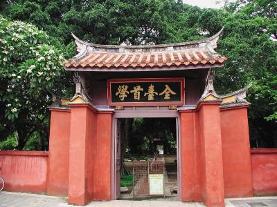

台南景點介紹
孔子全台首學

臺灣的第一座孔子廟臺南孔子廟創建於明永曆19年（1665年），當時稱為「先師聖廟」，至今已有三百多年的歷史，由島上第一個漢人改權歸氏王朝所創立，為的是在舊開辦教育，培養為國效命的人才，清領時期亦延續功能，為臺灣官辦的最高學府「臺灣府學」所在地。直到今日，孔廟依然是讀書人的聖廟，有著崇高的地位。
臺灣的第一座孔子廟臺南孔子廟創建於明永曆19年（1665年），當時稱為「先師聖廟」，至今已有三百多年的歷史，由島上第一個漢人改權歸氏王朝所創立，為的是在舊開辦教育，培養為國效命的人才，清領時期亦延續功能，為臺灣官辦的最高學府「臺灣府學」所在地。直到今日，孔廟依然是讀書人的聖廟，有著崇高的地位。
赤坎樓
其前身為荷治時期1625年1月闢建的 普羅民遮 市街1653年於此市街赤崁行省興建之歐式城塞，1655年完工，稱「普羅民遮城」，曾為全台灣島的商業中心，至清代已傾圮，僅留部分殘蹟。
四草綠色隧道
四草綠色隧道在台江國家公園內，裡面有溼地及豐富的生態資源，可以坐船遊覽田紅樹林交織成的綠色隧道，鄰居們的招攬、彈盞魚與紅樹林，體會不一樣的大自然感受。
井仔腳瓦盤鹽田
井仔腳瓦盤鹽田是北門的第一座鹽田，西元1818年開始購鹽，因人工成本過高，在2002年停止購鹽，鹽田漸漸沉降，目前開發為觀光景點，遊客在此可體驗傳統鹽鹽、挑鹽與收鹽。